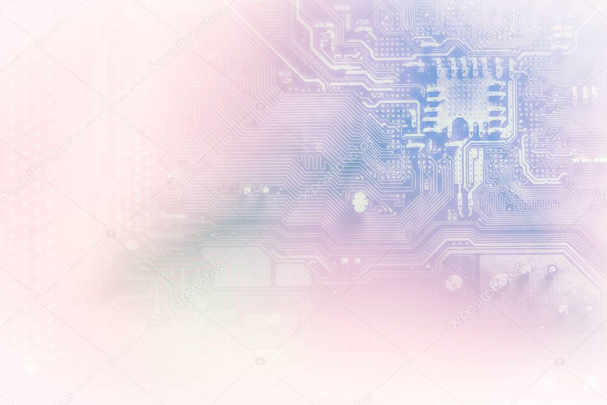

Este curso abarca los principios de la electrónica digital, incluyendo circuitos lógicos, sistemas digitales y microcontroladores, esenciales para el diseño y análisis de sistemas electrónicos modernos.
| Concepto | Descripción |
|---|---|
| Puertas lógicas | Elementos básicos de circuitos digitales que realizan operaciones lógicas |
| Sistemas digitales | Conjuntos de componentes electrónicos que procesan información digital |
| Microcontroladores | Dispositivos programables utilizados para controlar sistemas electrónicos |
| Circuitos combinacionales | Circuitos cuya salida depende únicamente de las entradas actuales |
El curso incluye prácticas de laboratorio, proyectos de diseño y simulaciones para aplicar los conceptos aprendidos. Se enfatiza la importancia de la innovación y la creatividad en el desarrollo de soluciones electrónicas.